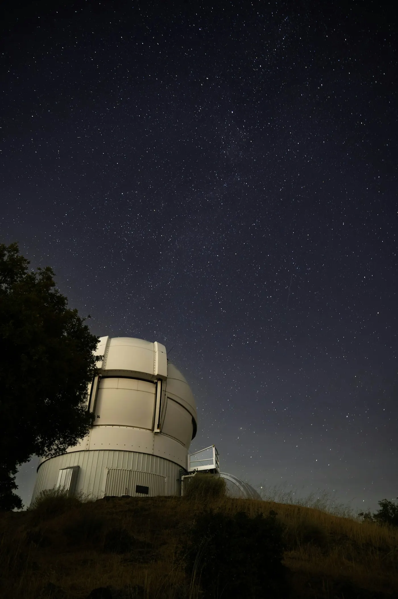
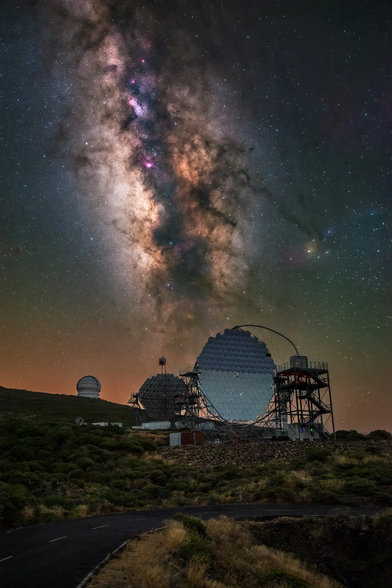
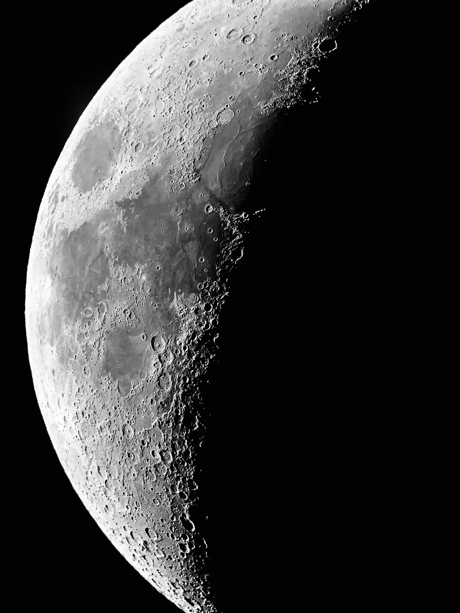
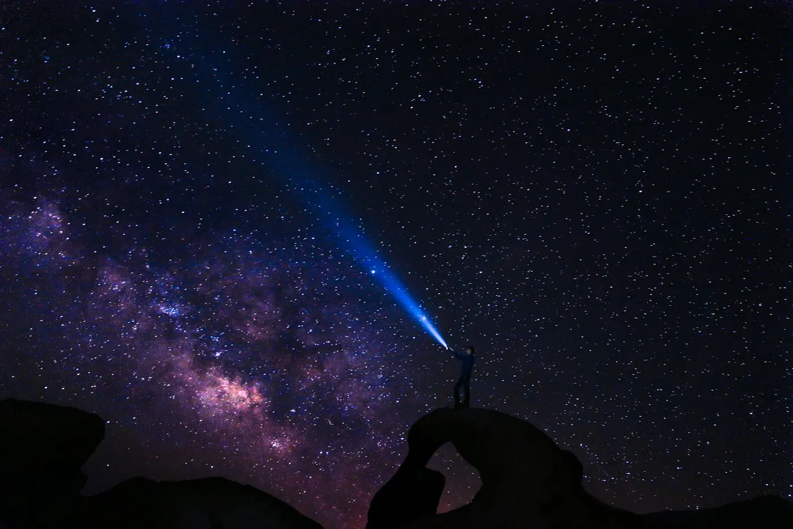
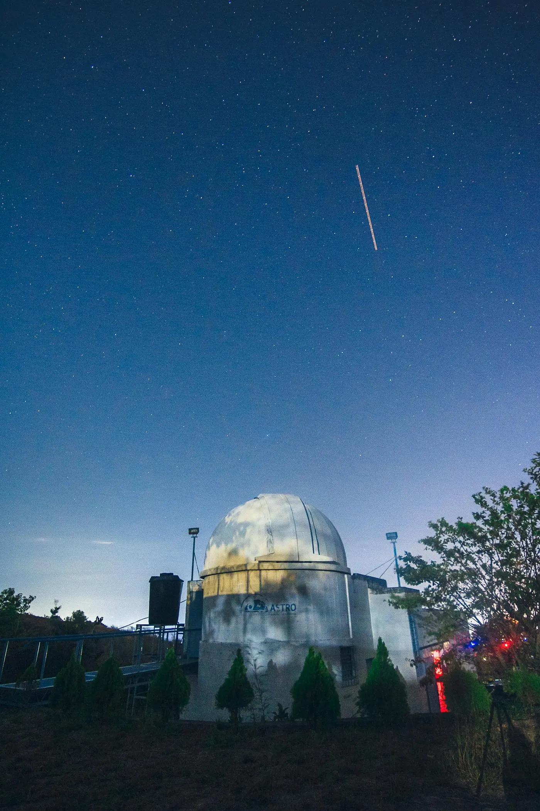
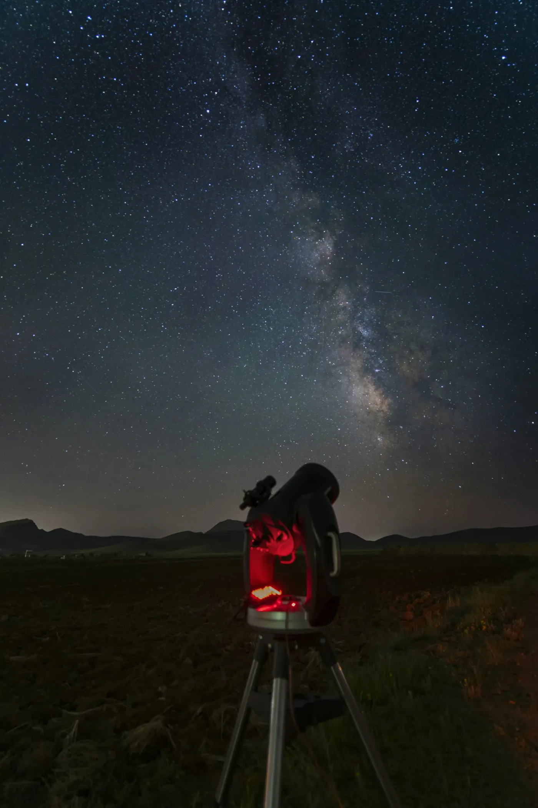

Stargazing tours out of town
See the rings of Saturn with your own eyes
Night trips 90 km from the city lights: a 12-inch telescope, a guide who knows every constellation, hot tea and blankets.

Tours
4 ways to spend a night under the stars
All tours start at 21:00 from the city centre and come back by 2:00.
Sky this month
What we will see on the next nights
We check the cloud forecast the day before. If the sky closes, the night moves.





The place
A field where the sky is truly dark
We drive 90 km away from the city glow. The site has warm tents, a dry toilet and parking.
- Transfer from the city centre
- Tea, blankets and red lamps
- Groups up to 14 people
Prices
Pick your night
Transfer, tea and blankets are in every price. Kids from 7 years pay half.
How it goes
From the booking to the first star
You only need warm clothes. Everything else we bring.
- Pick a nightOnline, with the moon phase shown.
- Forecast checkA message the day before.
- Transfer at 21:00From the city centre.
- 3 hours of skyBack in the city by 2:00.
Questions
Before you book
What if it is cloudy?
We move the night to the next clear date or return the money, as you choose.
What should I wear?
Warm, even in summer: at night in the field it is 8-10 degrees colder.
Can kids come?
Yes, from 7 years. Kids love the Moon and Saturn most.
Can I come by car?
Yes, we send the coordinates and the price is $10 lower.
Booking
Book a night under the stars
We confirm the date and send the forecast the day before.
+1 555 0119 · night@midnightsky.tours